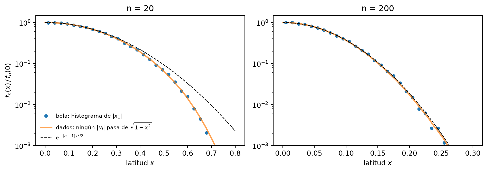
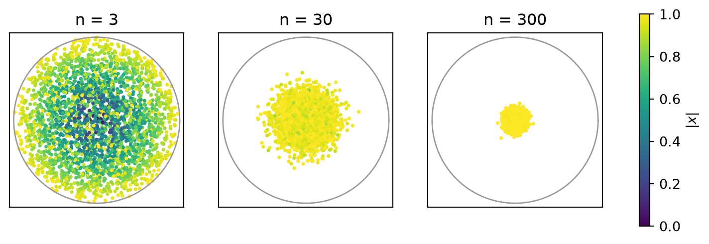
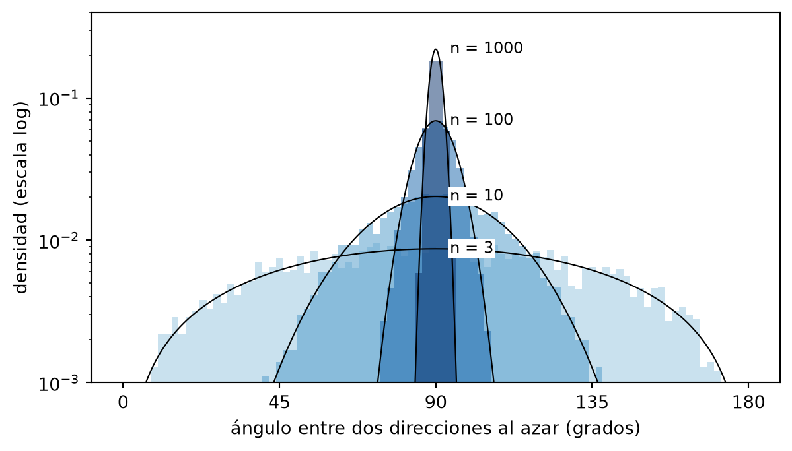

Coge un punto al azar, uniforme, dentro de la bola unidad de \(\mathbb R^n\). En dimensión alta pasan dos cosas raras: el punto está casi seguro pegado a la superficie, y está casi seguro pegado al ecuador. Y no a un ecuador cualquiera, sino a cualquiera que elijas, incluso a cientos de ellos a la vez.
Aquí saco la distribución de la “latitud” de dos maneras. La primera es cortando la bola en rebanadas. La segunda parte de una pregunta que no parece tener nada que ver: ¿cuál es la probabilidad de que \(n\) números uniformes no pasen ninguno de \(1-\varepsilon\)? Al final lo compruebo con Monte Carlo.
¿Qué es el ecuador?
Fijamos un polo norte, que es un vector unitario \(e\). Por simetría da igual cuál, así que tomamos \(e = e_1\). El ecuador es el hiperplano \(\{x_1 = 0\}\), y la latitud de un punto es su coordenada \(x_1\). “Estar cerca del ecuador” significa estar en la franja \(|x_1| < \delta\).
En \(\mathbb R^3\) el ecuador de la esfera \(S^2\) es una circunferencia \(S^1\), y parece poca cosa. Pero en \(\mathbb R^n\) el ecuador de \(S^{n-1}\) es una \(S^{n-2}\). Solo pierde una dimensión de \(n\). En \(\mathbb R^{1000}\), quitar una dirección de mil es no quitar casi nada.
Ruta 1: cortar en rebanadas
Cortamos la bola por \(x_1 = x\). La rebanada es una \((n-1)\)-bola de radio \(\sqrt{1-x^2}\), cuyo volumen es proporcional a \((1-x^2)^{\frac{n-1}{2}}\). La densidad de la latitud es entonces
La varianza exacta es \(1/(n+2)\), porque bajo \(f_n\) la variable \(x_1^2\) es una \(\mathrm{Beta}\big(\tfrac12, \tfrac{n+1}{2}\big)\). La anchura de la franja que contiene casi todo el volumen es del orden de \(1/\sqrt n\). En \(n=3\) eso vale \(0.58\) y no se concentra nada. En \(n=1000\) vale \(0.03\).
Ruta 2: ningún número mayor que \(1-\varepsilon\)
Olvidémonos de la bola. Tiramos \(n\) números \(u_i\) uniformes e independientes en \([-1,1]\) y miramos los sucesos
El mecanismo es un producto de \(n\) factores casi iguales a 1, que da una exponencial en \(n\varepsilon\). En cuanto \(\varepsilon \gg 1/n\), casi seguro algún número se pasa.
Ahora volvamos a la densidad de la ruta 1, pero relativa a su valor en el ecuador:
La lectura es esta. Subir a latitud \(x\) gasta \(x^2\) del “presupuesto” \(|x|^2 \le 1\), así que en cada una de las otras \(n-1\) direcciones el sitio disponible pasa de \(1\) a \(\sqrt{1-x^2}\) (Pitágoras). Cada dirección “acepta” de forma independiente con probabilidad \(\sqrt{1-x^2}\), y hacen falta las \(n-1\) a la vez.
La gaussiana alrededor del ecuador es la misma ley \(e^{-n\varepsilon}\) de “ningún dado se pasa”, con la única diferencia de que \(\varepsilon\) es cuadrático en la latitud. La exponencial se convierte en gaussiana por Pitágoras. La franja ecuatorial termina donde \((n-1)\,\varepsilon(x) \sim 1\), es decir, en \(|x| \sim \sqrt{2/n}\).
¿Cerca de todos los ecuadores a la vez?
Si casi todo está en la franja \(|x_1|<\delta\), ¿cómo puede estar también en la franja \(|x_2|<\delta\)? Porque “casi todo” no es “todo”. La intersección de \(k\) franjas pierde como mucho la suma de lo que pierde cada una:
Volvemos a la pregunta de antes, pero ahora para el punto de la bola: ¿ninguna coordenada mayor que \(\delta\)? Un ejemplo explícito es \(x = (1,\dots,1)/\sqrt n\). Está en la superficie y cada coordenada vale \(1/\sqrt n\), así que con \(n = 10^4\) está a \(0.01\) de los \(n\) ecuadores coordenados a la vez. En \(\mathbb R^3\) esto es imposible, porque \(x^2+y^2+z^2 = 1\) obliga a que alguna coordenada valga al menos \(1/\sqrt 3\).
Lo único que no se puede es pedir todas las direcciones. Si \(|\langle x, e\rangle| < \delta\) para todo \(e\) unitario, entonces \(|x| < \delta\), y esa bola tiene volumen relativo \(\delta^n \to 0\). Cada punto tiene una dirección en la que está en el polo: la suya, \(e = x/|x|\).
Monte Carlo
Code
import numpy as npimport matplotlib.pyplot as pltfrom scipy.special import gammalnfrom scipy.stats import normrng = np.random.default_rng(0)def bola_uniforme(n, N):# dirección: gaussiana normalizada# radio: el máximo de n dados, porque P(max <= t) = t^n es justo la ley del radio g = rng.standard_normal((N, n)) theta = g / np.linalg.norm(g, axis=1, keepdims=True) R = np.abs(rng.uniform(-1, 1, (N, n))).max(axis=1)return R[:, None] * theta
Primero, la intersección sola: la probabilidad de que ningún dado pase de \(1-\varepsilon\), con \(\varepsilon = 0.01\).
Code
eps, N =0.01, 20_000print(f"{'n':>5}{'Monte Carlo':>12}{'(1-eps)^n':>10}")for n in [10, 50, 100, 300]: u = rng.uniform(-1, 1, size=(N, n)) p_mc = np.mean(np.abs(u).max(axis=1) <=1- eps)print(f"{n:>5}{p_mc:>12.4f}{(1- eps)**n:>10.4f}")
n Monte Carlo (1-eps)^n
10 0.9024 0.9044
50 0.6037 0.6050
100 0.3721 0.3660
300 0.0474 0.0490
La latitud. Con el radio del cubo y la dirección gaussiana, el histograma de \(x_1\) debe caer encima de \(f_n\) y, para \(n\) grande, de \(\mathcal N(0,1/(n+2))\).
Figure 1: Distribución de la latitud de un punto uniforme en la bola.
Latitud contra dados. Ahora la comparación de la ruta 2. Estimamos \(f_n(x)/f_n(0)\) de dos formas que no comparten nada: con el histograma de \(|x_1|\) de puntos de la bola, y con la fracción de vectores de \(n-1\) dados en los que ninguno pasa de \(\sqrt{1-x^2}\). Encima va \(e^{-(n-1)x^2/2}\). El eje vertical es logarítmico para ver las colas.
Code
def max_dados(k, M, lote=20_000):# máximo de |u_i| sobre k dados, por lotes para no llenar la memoriareturn np.concatenate([np.abs(rng.uniform(-1, 1, (lote, k))).max(axis=1)for _ inrange(M // lote)])fig, axes = plt.subplots(1, 2, figsize=(10, 3.6))for ax, n, xmax inzip(axes, [20, 200], [0.8, 0.3]):# bola: densidad de |x1| dividida por f_n(0) = c_n x1 = np.abs(bola_uniforme(n, 60_000)[:, 0]) cuentas, bordes = np.histogram(x1, bins=30, range=(0, xmax)) dens = cuentas / (len(x1) * np.diff(bordes)) /2# /2 porque hemos doblado x1 -> |x1| centros =0.5* (bordes[1:] + bordes[:-1]) c_n = np.exp(gammaln(n /2+1) -0.5* np.log(np.pi) - gammaln((n +1) /2)) ax.plot(centros, dens / c_n, "o", ms=4, label=r"bola: histograma de $|x_1|$")# dados: ¿ninguno de los n-1 pasa de sqrt(1-x^2)? xs = np.linspace(0, xmax, 60) m = max_dados(n -1, 200_000) p_dados = [np.mean(m <= np.sqrt(1- x**2)) for x in xs] ax.plot(xs, p_dados, lw=2, alpha=0.7, label=r"dados: ningún $|u_i|$ pasa de $\sqrt{1-x^2}$") ax.plot(xs, np.exp(-(n -1) * xs**2/2), "k--", lw=1, label=r"$e^{-(n-1)x^2/2}$") ax.set_yscale("log"); ax.set_ylim(1e-3, 1.5) ax.set_xlabel("latitud $x$"); ax.set_title(f"n = {n}")axes[0].set_ylabel(r"$f_n(x)\,/\,f_n(0)$")axes[0].legend(frameon=False, fontsize=8)plt.tight_layout()plt.show()

Figure 2: Densidad de la latitud relativa al ecuador, estimada con puntos de la bola y con dados.
Los puntos (bola) caen sobre la curva de los dados en todo el rango: la probabilidad de que \(n-1\) dados no pasen de \(\sqrt{1-x^2}\)es el perfil del ecuador. La gaussiana solo acierta mientras \(\varepsilon(x) \approx x^2/2\). En \(n=20\) se ve cómo se separa en la cola, donde el término \(O(x^4)\) ya pesa. En \(n=200\) toda la masa está en \(|x| \lesssim 0.25\), donde la aproximación es buena.
La sombra. Proyectamos los puntos sobre el plano \((x_1, x_2)\), que es como mirar la bola desde el polo de dos ecuadores a la vez, y coloreamos cada punto por su radio real \(|x|\).
Code
circ = np.linspace(0, 2* np.pi, 300)fig, axes = plt.subplots(1, 3, figsize=(10, 3.6))for ax, n inzip(axes, [3, 30, 300]): x = bola_uniforme(n, 3_000) r = np.linalg.norm(x, axis=1) sc = ax.scatter(x[:, 0], x[:, 1], c=r, s=3, cmap="viridis", vmin=0, vmax=1) ax.plot(np.cos(circ), np.sin(circ), color="0.6", lw=1) # borde de la bola ax.set_aspect("equal"); ax.set_xlim(-1.05, 1.05); ax.set_ylim(-1.05, 1.05) ax.set_xticks([]); ax.set_yticks([]) ax.set_title(f"n = {n}")fig.colorbar(sc, ax=axes, shrink=0.8, label=r"$|x|$")plt.show()

Figure 3: Sombra de puntos uniformes de la bola sobre el plano (x1, x2). El color es la distancia real al centro.
En \(n=300\) todos los puntos son amarillos, es decir, están en la superficie. Y sin embargo su sombra es una nube diminuta en el centro, de radio \(\sim 1/\sqrt n\). Ningún punto está cerca del polo de \(x_1\) ni del de \(x_2\): todos están en los dos ecuadores a la vez.
Todo el mundo está en el ecuador de todo el mundo. Antes decía que cada punto tiene su propio polo, la dirección \(x/|x|\). Así que podemos usar un punto al azar como polo y preguntar en qué latitud está otro punto al azar. Como el polo es independiente del segundo punto, \(\cos\varphi\) es la latitud de un punto uniforme de la esfera\(S^{n-1}\). Por el mismo corte en rebanadas (ahora una \(S^{n-2}\) de radio \(\sqrt{1-t^2}\), con un factor \(1/\sqrt{1-t^2}\) por la inclinación) su densidad es \(\propto (1-t^2)^{\frac{n-3}{2}}\). En \(n=3\) sale uniforme, que es el teorema de la sombrerera de Arquímedes. Pasando a ángulo, la densidad es
En \(n=3\) es \(\sin\varphi\), bastante repartida. En \(n\) grande se convierte en un pico en \(90°\) de anchura \(\sim 1/\sqrt n\) radianes: dos direcciones al azar son casi perpendiculares.
Code
def direccion_uniforme(n, N): g = rng.standard_normal((N, n))return g / np.linalg.norm(g, axis=1, keepdims=True)phi = np.linspace(0, 180, 721)dims = [3, 10, 100, 1000]colores = plt.cm.Blues(np.linspace(0.4, 1.0, len(dims)))fig, ax = plt.subplots(figsize=(7, 3.8))for n, col inzip(dims, colores): a, b = direccion_uniforme(n, 5_000), direccion_uniforme(n, 5_000) ang = np.degrees(np.arccos(np.clip(np.sum(a * b, axis=1), -1, 1))) ax.hist(ang, bins=90, range=(0, 180), density=True, color=col, histtype="stepfilled", alpha=0.5)# sin^(n-2) en logaritmos y normalizado numéricamente logp = (n -2) * np.log(np.sin(np.radians(phi)) +1e-300) p = np.exp(logp - logp.max()) p /= np.trapezoid(p, phi) ax.plot(phi, p, color="k", lw=0.8) ax.annotate(f"n = {n}", (90, p.max()), xytext=(8, 0), textcoords="offset points", va="center", fontsize=9, bbox=dict(fc="white", ec="none", pad=1))ax.set_xlabel("ángulo entre dos direcciones al azar (grados)")ax.set_ylabel("densidad (escala log)")ax.set_yscale("log"); ax.set_ylim(1e-3, 0.4)ax.set_xticks([0, 45, 90, 135, 180])plt.show()

Figure 4: Ángulo entre dos direcciones al azar. Las curvas negras son la densidad exacta, proporcional a sin^(n-2). Eje vertical logarítmico.
Para cerrar, el número del principio. En \(n = 1000\), ¿qué fracción de puntos está a menos de \(0.15\) de los mil ecuadores coordenados a la vez, es decir, sin ninguna coordenada mayor que \(0.15\)?
Code
n =1000m = np.abs(bola_uniforme(n, 5_000)).max(axis=1)print(f"sin ninguna coordenada mayor que 0.15: {np.mean(m <0.15):.3f}")print(f"radio medio: {np.linalg.norm(bola_uniforme(n, 5_000), axis=1).mean():.4f}")
sin ninguna coordenada mayor que 0.15: 0.998
radio medio: 0.9990
Prácticamente todos, y a la vez a distancia \(\approx 1\) del centro. En dimensión alta la esfera es casi toda ecuador, respecto a cualquier polo que elijas, incluido cualquier otro punto de la esfera.